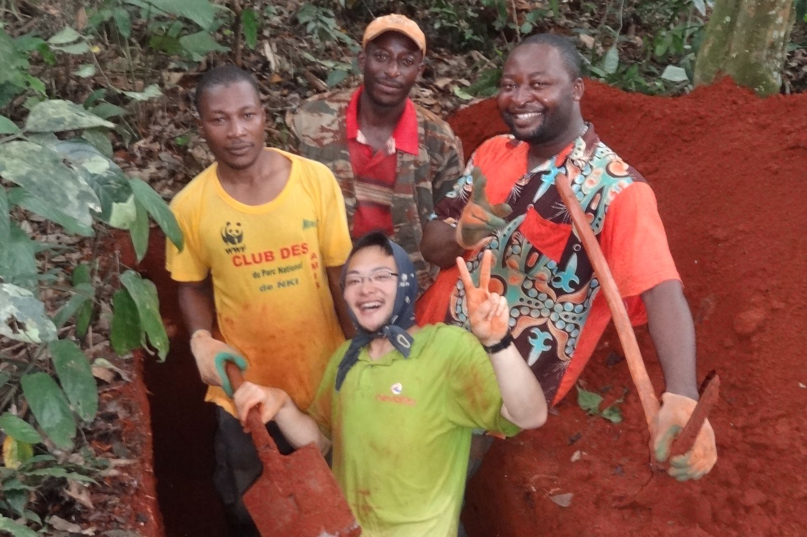
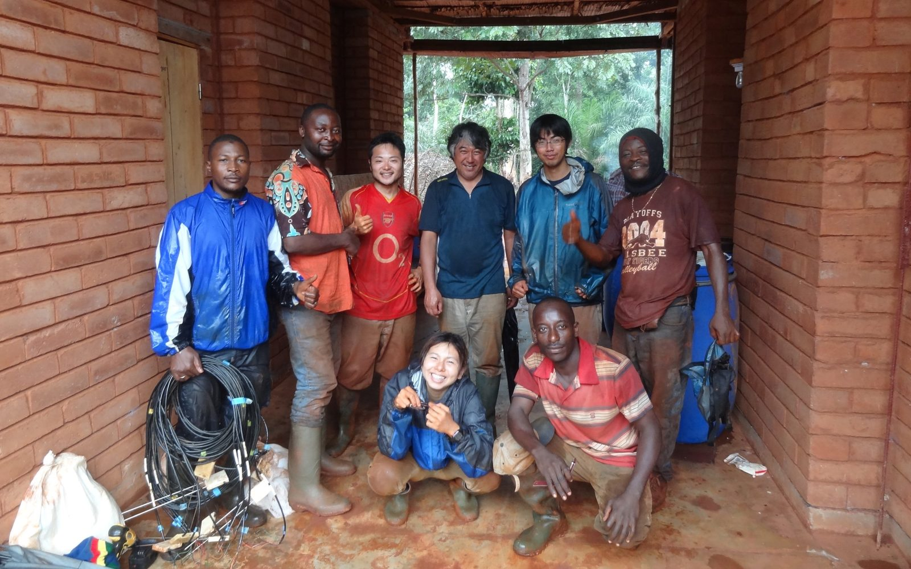
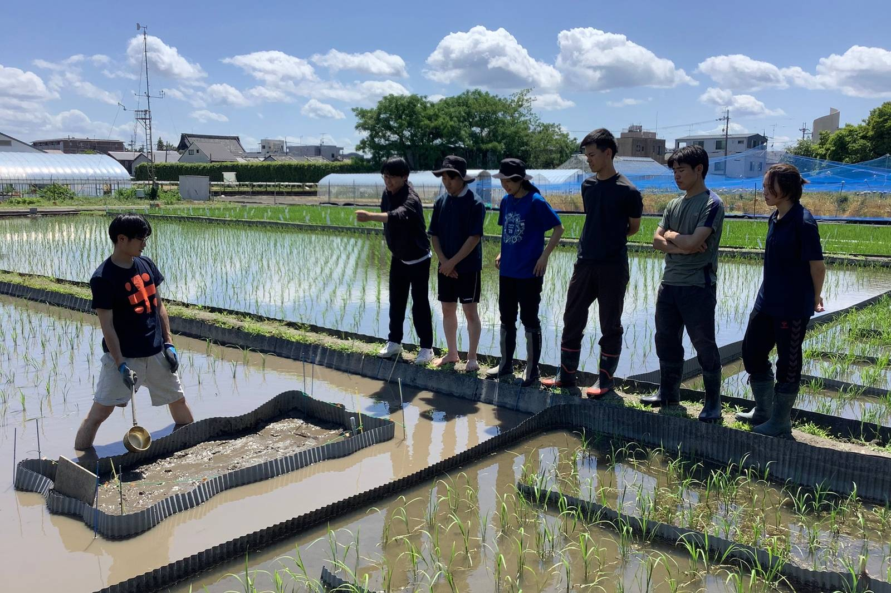
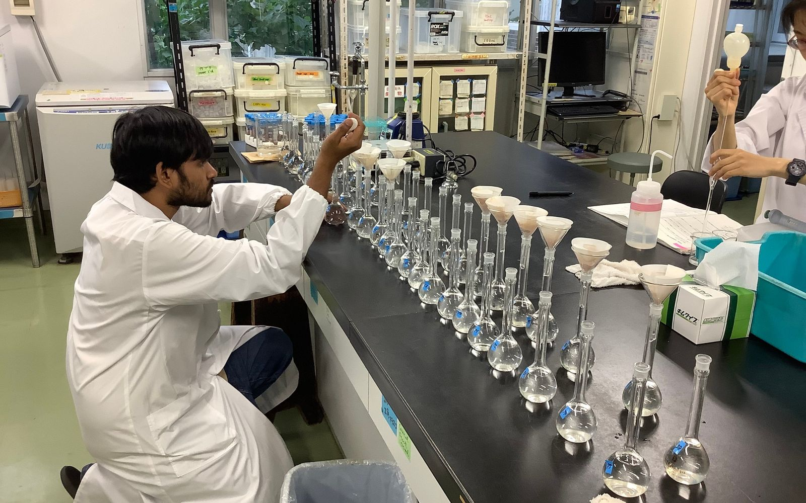

学生のみなさんへ
森へ、畑へ、田んぼへ。
一緒に研究しませんか。
募集中

森の中でも、海外の農村でも、日本の田んぼでも。現場に足を運んで、自分の手で採って、実験室で測って確かめる。そこから研究が始まります。土の色や手ざわりはもちろん、現地で見た風景、食べたもの、触れ合った人、そのすべてが感性になり、自分を形づくっていきます。そうして、研究が自分ごとになります。学んだことを生きた学問にするために、現場に通います。
大事にしているのは、現場に出る好奇心と、地道な分析を続ける根気です。土壌学は、手を動かしながら、走りながら、一緒に身につけていきましょう。
2028年4月入学の大学院生を募集しています！
- 修士課程いまの学部3回生（2028年4月入学）
- 博士後期課程4月入学・10月入学。修士で別のテーマをやってきた人も歓迎です
- 京大 農学部の3年生資源生物科学科 土壌学分野への配属を考えている人
他大学からも、海外からも、社会人からも。入り口はこのページの下にまとめました。研究テーマは固まっていなくてかまいません。興味のある方向を教えてもらえれば、相談しながら一緒に決めていきます。
こんな人を待っています！
- アジアやアフリカの農村に出かけて、現地の人と一緒に調べてみたい人
- 国内の生産者の農地で、現場に役立つ研究がしたい人
- 農業より先に、土そのものの成り立ちや自然生態系の物質循環の仕組みを知りたい人
- 土を掘るのが好きな人、まだ掘ったことはないけれど興味がある人
- フィールド調査も実験室の分析も、手を動かして自分でやってみたい人
研究はこう進みます
- 調査地とテーマを決める海外か国内か、自然か農地か、フィールドか室内か。これまでの調査地や共同研究のつながりを生かして、一緒に決めます。
- 現場で土や水を採取する土や水、ガス等の試料を採ります。土の中の水や元素の動きを、その場で測ることもあります。
- 実験室で分析する土壌中の養分の量や形態、微生物のはたらき、安定同位体（15N、13C）を使った追跡など。
- 学会で発表し、論文にする国内外の学会で発表し、論文として世に出すところまで伴走します。



数世代先も、われわれ人類がこの地球で食べて生きていくために。
土を掘って、測って、考えます。
一緒に研究している学生たち
いま一緒に研究しているのは9人（博士1・修士6・学部2）。調査地はベトナム、タイ、フィリピン、タンザニア、新潟、丹後、京都・滋賀・奈良の茶園や水田など、海外にも国内にも広がっています。一人ひとりの調査地と研究テーマ、出た論文は、学生たちのページにまとめています。
一緒に研究している学生たち →研究を通して、身につけてほしいこと
- 頭だけでなく、体で覚える視野を広くもってよく観察する力、現地の人や仲間と話して一緒に動く力、想定外のことが起きても何とかする力。現場に通い、粘り強く実験に取り組むうちに、こうした力がまとめて鍛えられます。
- マクロとミクロを行き来する森や村、地域の農業といった大きな世界と、土の粒や微生物、元素の動きといった小さな世界。現場と実験室を往復しながら、その両方から考えます。
- 科学の進め方は、ひとつではない仮説を立てて確かめるのは、科学の大事な進め方です。それに加えて、現場をよく見て記録するところから問いが生まれる研究もあります。どちらも知ったうえで、自分の研究を組み立てられるようになってほしいと思っています。
- 立場をはっきりさせて、伝える科学は中立だ、という考え方があります。測った数字は、たしかに誰が測っても同じでなければなりません。一方で、何を問い、結果をどう伝えるかには、研究する人の立場が表れます。自分がどこに立っているのかを明らかにしたうえで発信することも、大切だと考えています。
- 自分なりのフィロソフィーをもつなぜこの研究をするのか、誰のための研究なのか。答えは人それぞれで、こちらから渡せるものではありません。自分なりの答えが言葉になるまで、伴走します。
入り口はいくつかあります
京都大学の学部生
農学部 資源生物科学科の土壌学分野に配属されると、同じグループで研究できます。配属前の見学はもちろん、授業の質問でも、進路の相談でも、研究室（農学部総合館 S-584）に顔を出してください。3年生のうちに一度来てもらえると、卒論のテーマを一緒にゆっくり考えられます。
他大学から大学院へ
大学院地球環境学舎（陸域生態系管理論分野）か、大学院農学研究科 地域環境科学専攻（比較農業論分野または土壌学分野）の入試を受けて入ってもらいます。入試は例年8月。冬（1〜2月）に二次募集がある年もあります。出願の前に、必ず一度連絡をください。研究テーマと受け入れの可否を、あらかじめ一緒に確認します。これまでも他大学から来た学生が多くいます。
博士後期課程・留学生
修士からそのまま進む人も、別の大学や分野から来る人も、社会に出てから戻ってくる人も。日本語でも英語でも指導します。学振DCや京都大学GROWプログラムの申請は、一緒に準備します。
社会人・いまの分野から離れて来る人
地球環境学舎は、実務の経験をもつ人を受け入れることを大事にしてきた大学院です。農業の現場、行政、企業、国際協力——土に関わる仕事をしてきた人の経験は、研究室では得がたい財産です。
まずは見学に来てください
研究室の見学や研究の相談は、時期を問わず受け付けています。京都まで来られない人はオンラインでも。見学では、研究の話を30分ほどして、実験室を見てもらい、学生とも話してもらいます。
メールにはこれだけで十分です
- お名前と、所属・学年
- 興味のあること（海外か国内か、森か農地か、現場中心かラボ中心か、など大まかで）
- 見学・相談の希望日（あれば）
数日のうちに返事をします。調査で山や海外にいるときは、少し遅れることがあります。
どんなふうに研究を始めたのかは、インタビュー記事で話しています（地球環境学堂 Sansai Newsletter No.39、2026年9月。English）。
一緒に楽しく研究しましょう！！